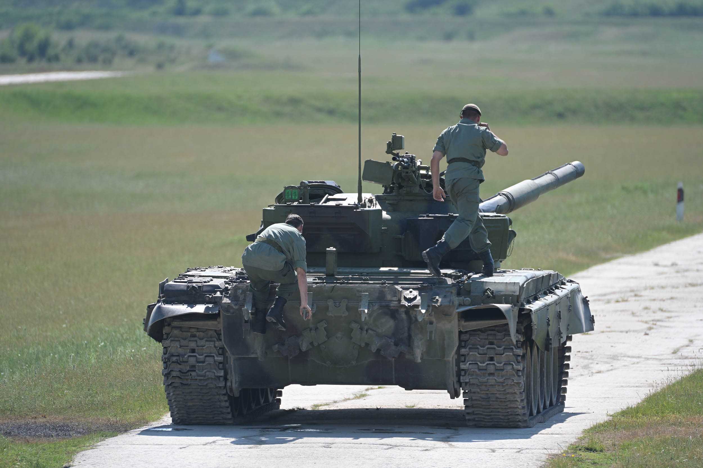
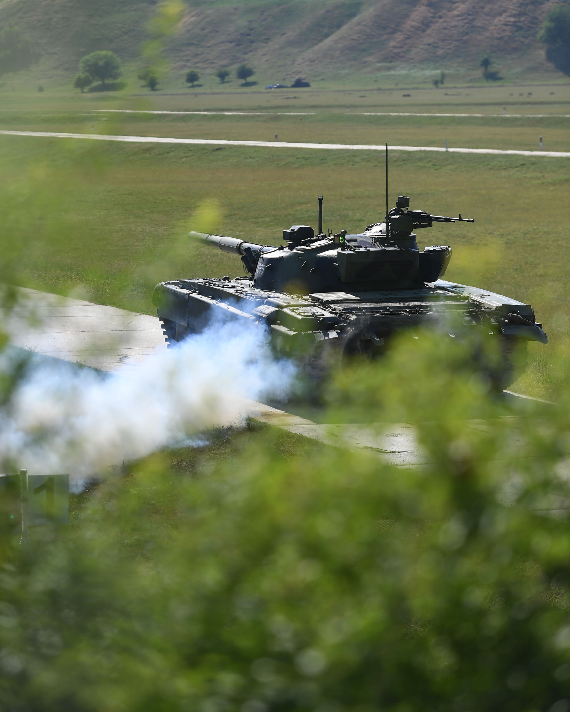

- To znaci biti spreman da u svakom trenutku možeš da navučeš na sebe posadno odelo , automatski pištolj , šlemafon
i da uskočiš u 40 tona čelika u kojem ne vidiš skoro ništa oko sebe.


Kako je zapravo biti u TENKU?
- Biti u tenku je kao biti u kapsuli. Postoje prizme koje ti omogućavaju da vidiš spoljašnosti ali to nikada
nije dovoljno. Izrazito je bučno unutra kada je motor upaljen što otežava sam rad unutar tenka.
- Imate osećaj kao da se uopšte ne rotira kupola dok ste u njoj i tako najlakše možete izubiti orjentaciju.
Da li su teški PREDMETI za tenkiste?
- Sadržaj predmeta za tenkiste se ne može reći da je lak. Olakšano je dosta jer su svi predmeti u 3. i 4. godini
školovanja medjusobno uvezani i stvaraju jednu veliku celinu koju je lakse ukapirati.